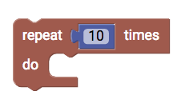
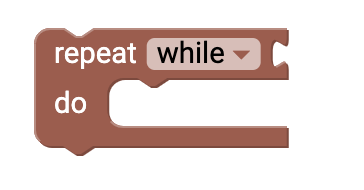
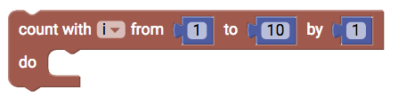

Schleifen
Loops are an easy element for control in your code. With a loop you can control how often a specific action should be executed.

Repeat x times
You can use this block if you want a certain action to be repeated x amount of times.
Repeat while
With this block you can repeat a certain action while a statement is true. In order for this to work you have to add a comparison statement.